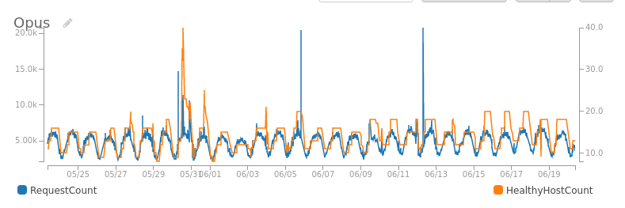

Shawn Siefkas
Lead Architect - Digital Systems
Meredith uses multiple distribution platforms – including broadcast television, print, digital, mobile and video – to provide consumers with content they desire and to deliver the messages of its advertising and marketing partners.
Includes 17 owned or operated television stations reaching 11 percent of U.S. households.
Leader in creating and distributing content across media platforms in key consumer interest areas such as food, home, parenting and health through well-known brands such as:
Meredith’s National Media Group reaches a multi-channel audience of almost 230 million consumers monthly, including more than 100 million unduplicated women and 75 percent of American Millennial women.
Many people ask "Will my data be secure in the cloud?". AWS provides many solutions to address these concerns such as:
A less obvious question is "How can the cloud help me reduce compliance scope?". Data security is important but compliance requirements can drive up the cost of storing/transmitting that information on-premise.
The consumer revenue group launched new product in 2014 to handle e-commerce internally.
Web traffic and related compute workloads vary by:
This auto scaling workload uses roughly 60% of peak compute in the last 30 days or 30% of peak compute during holiday traffic. 
This auto scaling workload uses spot instances to further drive down costs. The cost is roughly 15% of peak capacity as on-demand compute.
Meredith is looking at elastic compute for enabling cost efficient analysis of our data lake.
The AWS ecosystem presents oppurtunities to automate deep and complex infrastructure while minimizing cross team dependencies:
These complex but manageable solutions allow quickly experimenting or iterating on the architectural level. For example, deploying NAT gateways to a multi-AZ VPC is a single git commit and deployment that can be completed in hours by a single administrator.
Some notable challenges Meredith had to address during AWS adoption: